| 사진 | 특징 | 종족 | 성별 | 사진 | 특징 | 종족 | 성별 |
|---|---|---|---|---|---|---|---|
| 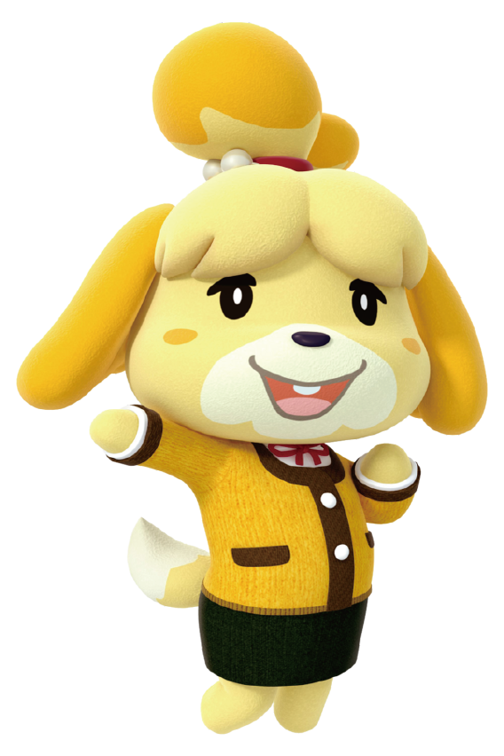 | 촌장 비서로써 많은 일을 도와주지만 가끔은 덜렁대는 모습이 있어요 |
강아지 | 여자 | 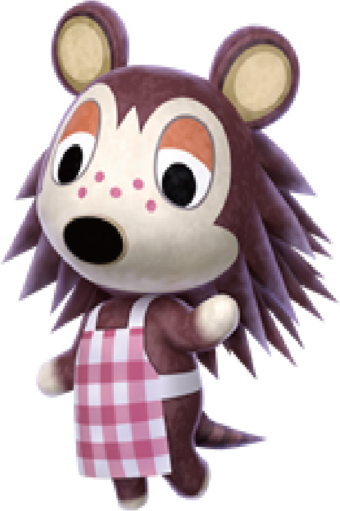 | 개성적인 옷을 만드는 첫째 고슴도치 | 고슴도치 | 여자 |
| 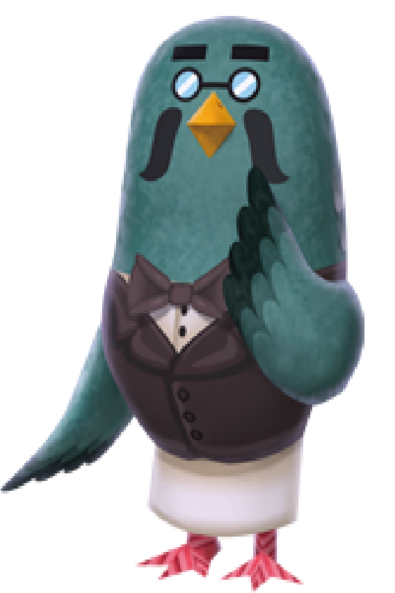 | 맛있는 커피를 만들어주는 커피숍의 주인 |
비둘기 | 남자 | 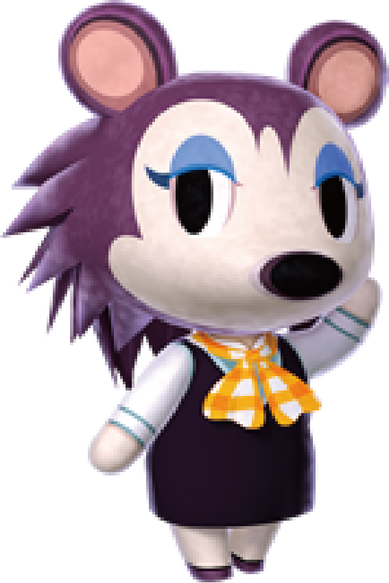 | 액세서리를 판매하는 둘째 고슴도치 | 고슴도치 | 여자 |
| 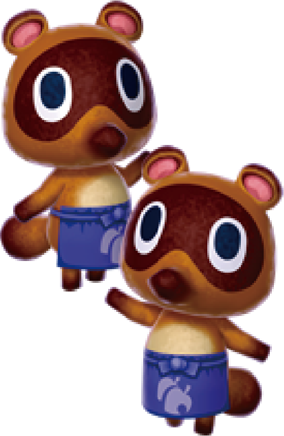 | 상점을 운영하는 쌍둥이 너구리 | 너구리 | 남자 | 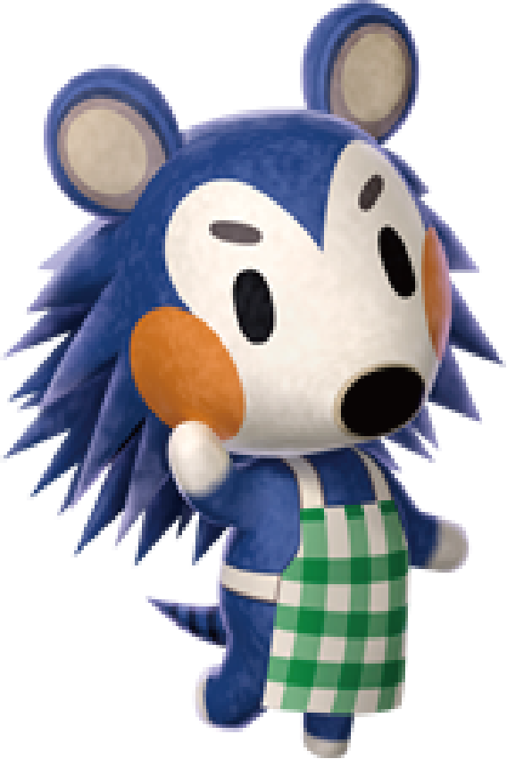 | 언제나 밝게 손님을 맞이하는 막내 고슴도치 | 고슴도치 | 여자 |
| 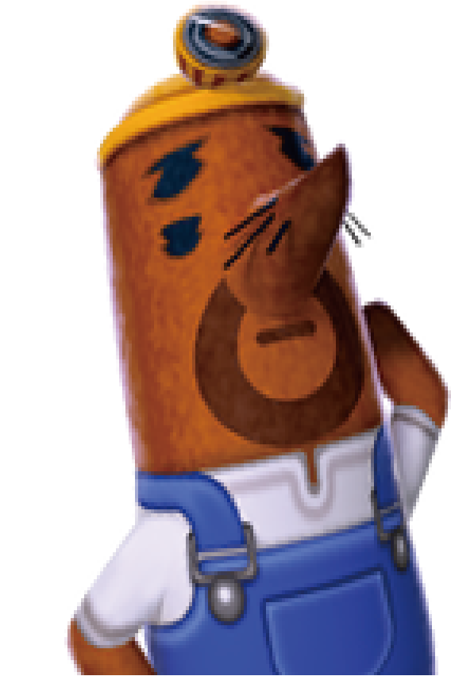 | 소심하게 혼을 내는 형 두더지 |
두더지 | 남자 | 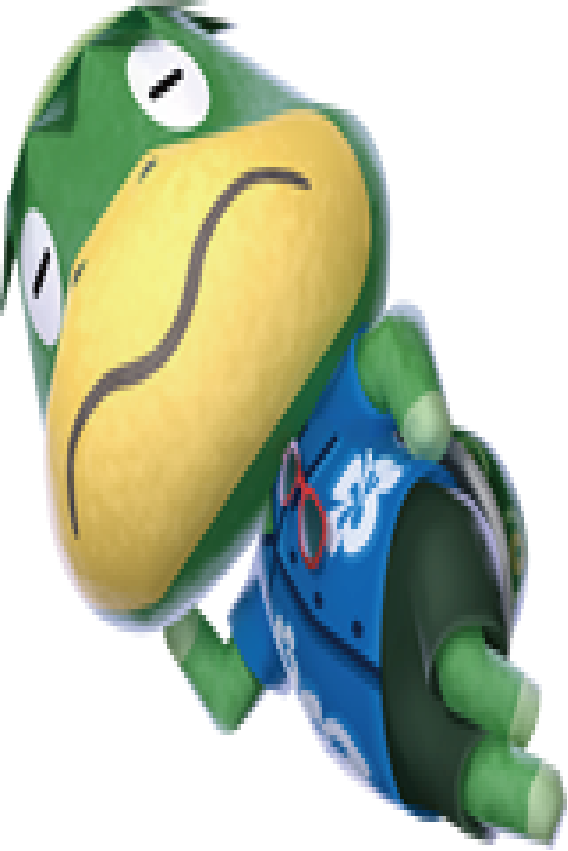 | 노래를 부르면서 섬으로 데려다 주는 뱃사공 | 거북이 | 남자 |
| 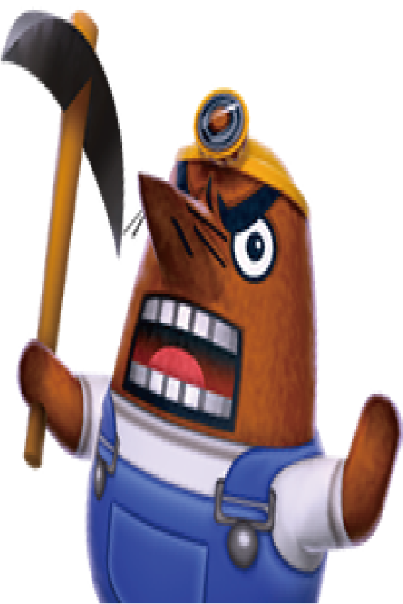 | 리셋을 엄격하게 관리하는 동생 두더지 |
두더지 | 남자 | 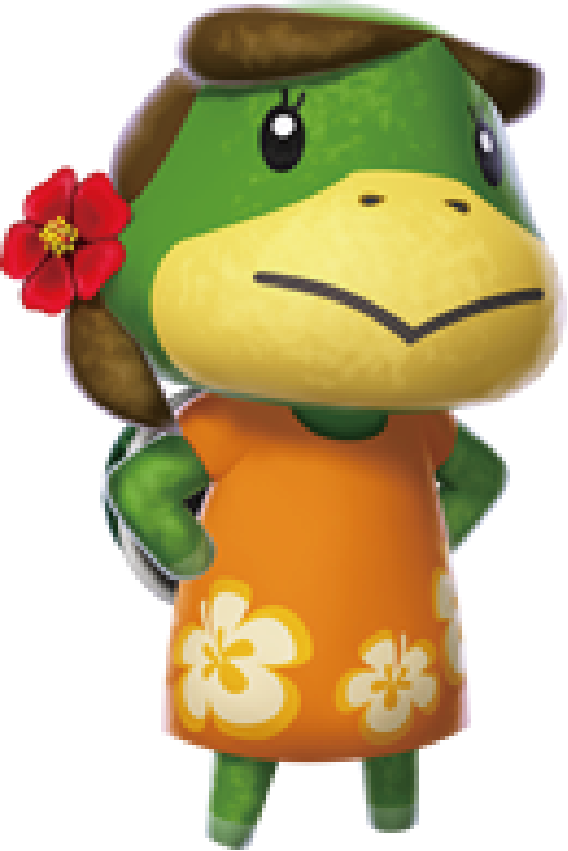 | 투어와 배를 준비해주는 갑돌의 아내 | 거북이 | 여자 |
| 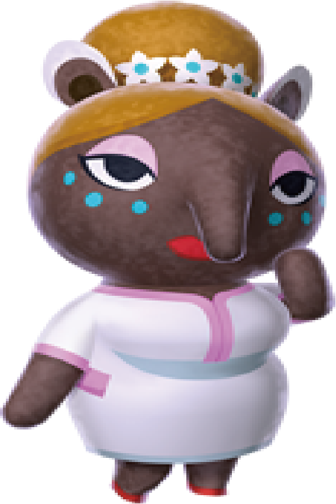 | 다양한 꿈을 보여주는 가게 점원 | 맥 | 여자 | 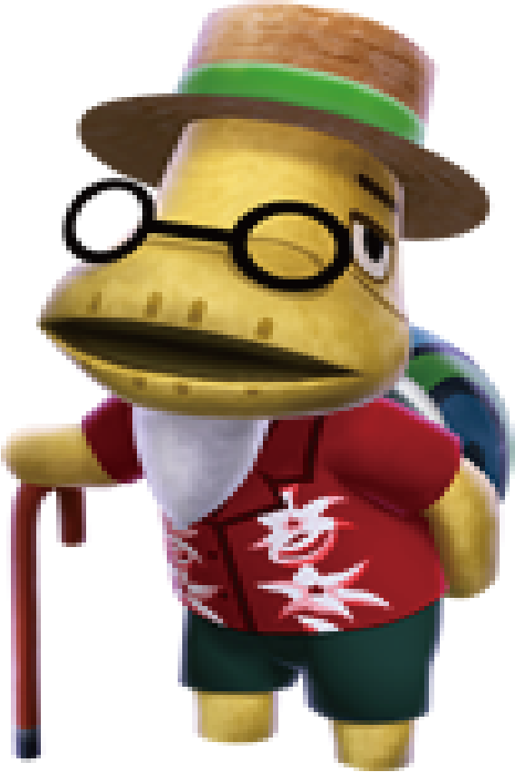 | 촌장 은퇴를 계기로 섬에서 즐겁게 투어를 운영 | 거북이 | 남자 |